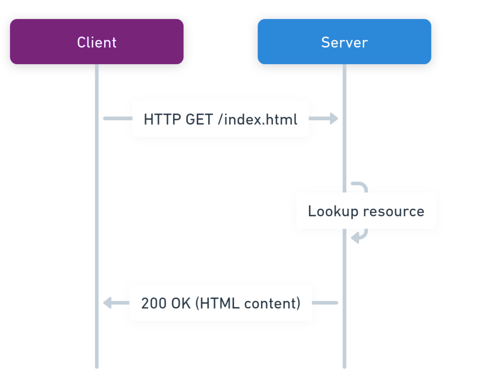
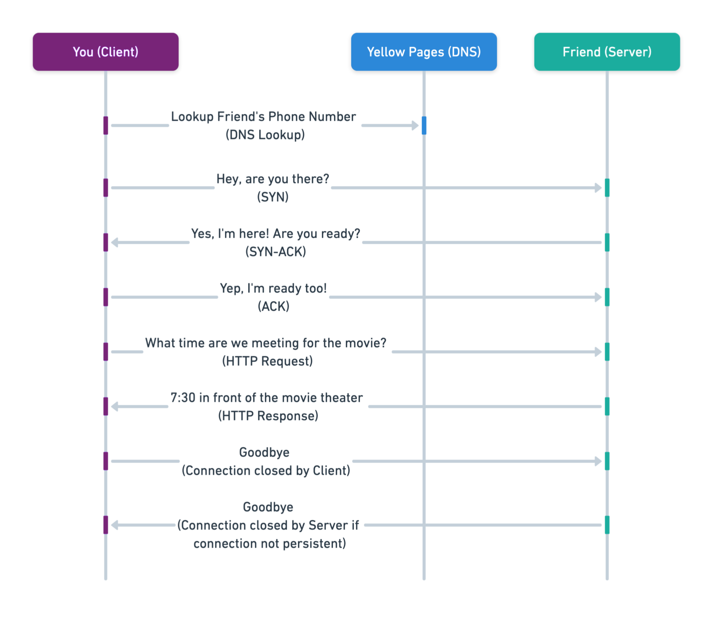
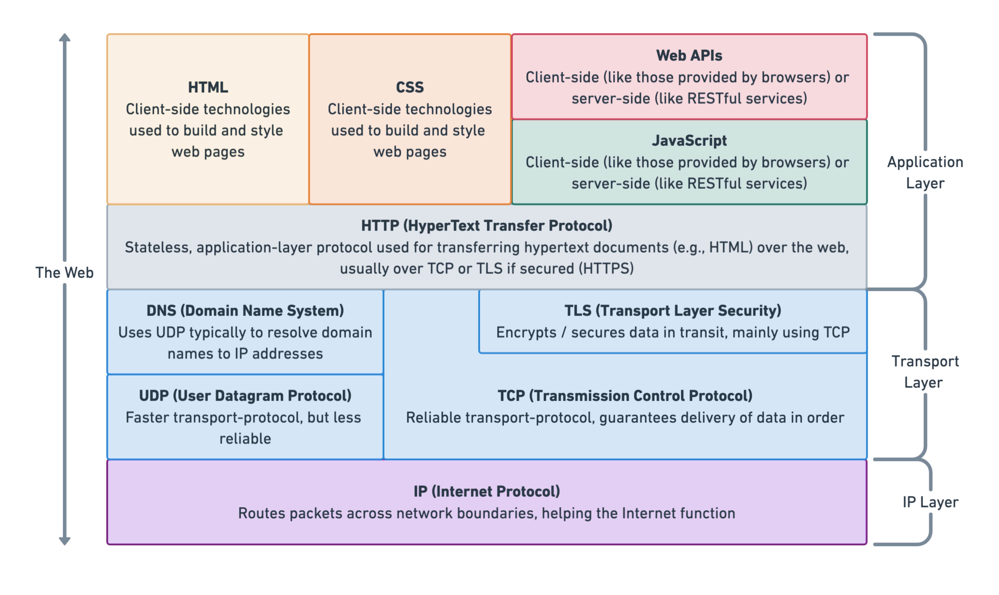
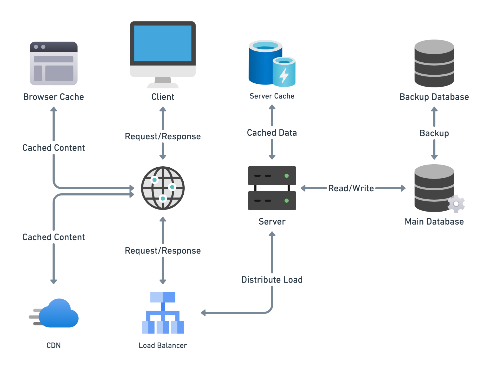
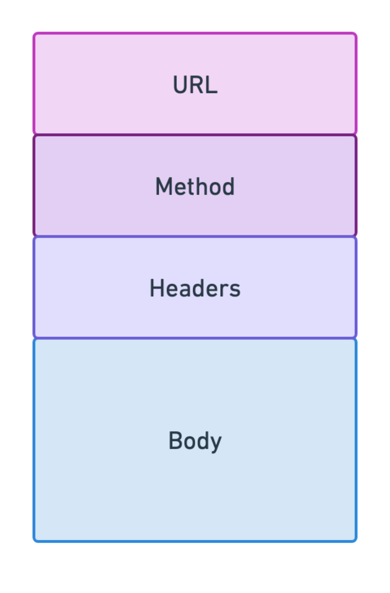
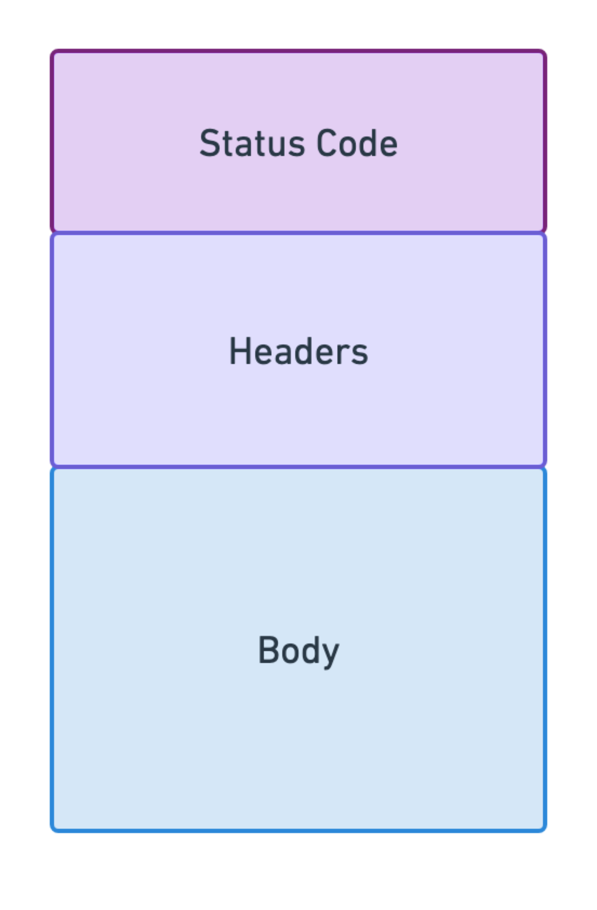
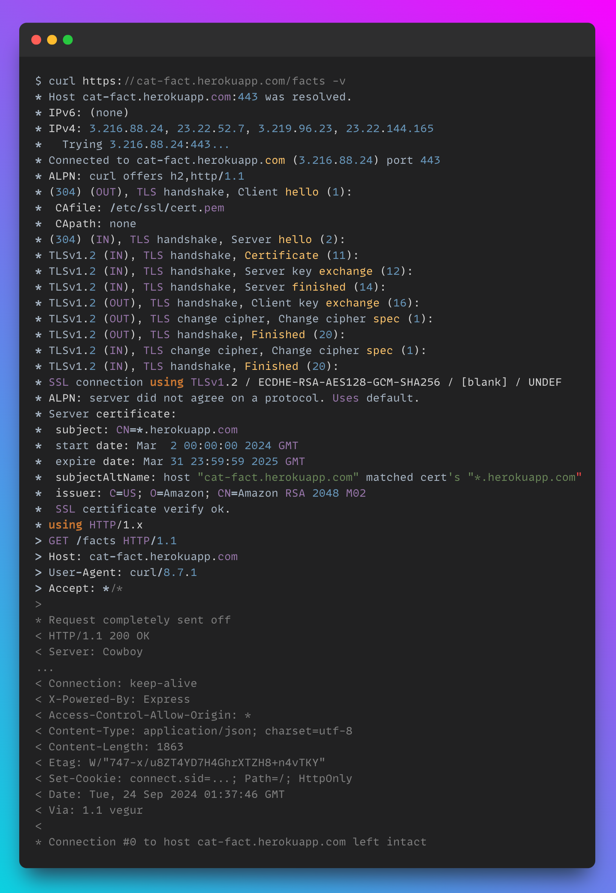
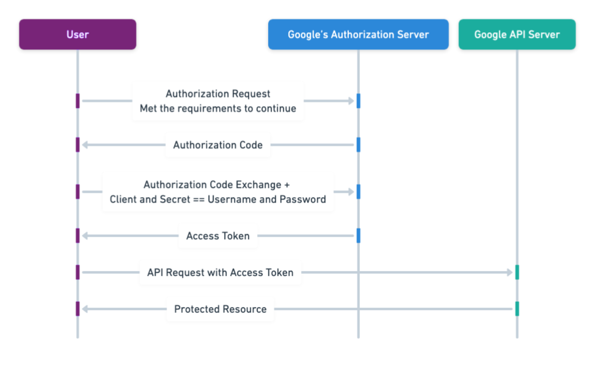

✅ Understanding HTTP
✅ HTTP Request Lifecycle
✅ Web Architecture Overview
✅ HTTP Request Structure
✅ HTTP Response Structure
✅ HTTP Request Example
✅ REST API 101
✅ API Versioning
✅ API Routes
✅ API Security Concepts
✅ API Consumption with Postman REST Client
✅ Spec Driven Development
✅ Use AI to Scaffold Project

HTTP/1.0: Basic functionality with no persistence between requests.HTTP/1.1: Persistent connections, better caching, but still suffers from limitations like head-of-line blocking. HTTP/2: Major performance improvements with multiplexing and binary framing but still reliant on TCP.HTTP/3: Uses QUIC over UDP, eliminating head-of-line blocking and improving connection speed and reliability. 
Key | Value |
DNS Lookup | Resolve domain names (i.e., website addresses) to IP addresses, a unique number that identifies a device connected to the internet. |
TCP 3-Way Handshake | Establishing a connection between client and server. |
HTTP Request | Client sends an HTTP request. |
HTTP Response | Server processes and returns the appropriate response. |
Connection Close | Connections can be set to persistent, therefore reused (i.e., closed by client), or one time connections (i.e., closed by server). |


Key | Value |
Content Delivery Network (CDN) | A middleman cache (i.e., proxy cache) between a user and a server, often close to the user geographically, that stores copies of website content to reduce latency and improve load times. |
Load Balancer | A device/software that distributes network traffic across multiple servers to improve efficiency and reliability. |

https://www.wesellvehicles.com/vehicles/bmw/x3?year=2017&exterior-color=navy&page-number=1&page-size=25
https://http, https, etc. https is secure and encrypted.www.wesellvehicles.comwww), the second-level domain (wesellvehicles), and the top-level domain (.com). ".".edu, .org, .gov, .comkhanacademy.org, microsoft.comwww.khanacademy.org, support.microsoft.com/vehicles/bmw/x3?year=2017&exterior-color=navy&page-number=1&page-size=25? and contains key-value pairs separated by &. Each key-value pair provides parameters for the request: year=2017: The year the vehicle was manufactured.exterior-color=navy: The exterior color of the vehicle.page-number=1: Provide the first page of results.page-size=25: Request to see 25 items per page of results.⭐️ Bonus question: What port does HTTP communicate over?
Methods are ways to request data from servers. They are in the form of verbs. Often referred to as CRUD operations.
Method | Usage |
| Get data from the server |
| Create a new resource on the server |
| Update an existing resource on the server |
| Delete resource(s) on the server |
Imagine sending a letter through the postal service. The envelope is the part that has your address and the person's address. That's like the HTTP headers, which have information about where the message is going and how it's being sent
Common Request Headers:
Host: Specifies the domain name of the server.User-Agent: Identifies the client software making the request (e.g., browser, app).Accept: Informs the server what content types the client is willing to accept.Content-Type: Specifies the media type of the body of the request when sending data (such as in a POST or PUT request).Authorization: Used to provide authentication credentials (e.g., a Bearer token for OAuth).Example HTTP GET Request:
GET /weather?city=San+Francisco HTTP/1.1
Host: api.weather.com
User-Agent: Mozilla/5.0 (Macintosh; Intel Mac OS X 10_15_7) AppleWebKit/605.1.15 (KHTML, like Gecko) Version/14.1 Safari/605.1.15
Accept: application/json
The body of the letter is the actual message you are sending inside the envelope. It could be words, pictures, or anything you're trying to communicate.
The body carries the payload that the client is sending to the server. This might include data in the form of JSON, XML, plain text, a file upload, etc.
Key points:
GET typically have an empty body in requests, while POST, PUT should include a body.Content-Type: This header indicates the format of the body (e.g., application/json, text/html, etc.).Content-Length: This header specifies the size of the body in bytes.
HTTP status codes are short messages your web browser and websites use to talk to each other when you're browsing the internet. They tell your browser what happened when it tried to load a webpage.
Here's a breakdown of the main categories:
1xx: InformationThese codes let your browser know the request is being processed, but there's no final result yet. You rarely see these.
2xx: SuccessEverything worked as expected!
200 OK: Standard success response for GET requests.201 Created: Typically returned by a POST request when a resource is successfully created.204 No Content: The server successfully processed the request, but no content is returned, typically used when updating resources via PUT or removing resources via DELETE.3xx: RedirectionThese codes mean the website you're trying to reach is sending you somewhere else.
301 Moved Permanently: The requested resource has been assigned a new permanent URI, and future requests should use the new URI.304 Not Modified: Used with conditional GET requests when the content hasn't changed since the last fetch. The server returns this response, so the client can use cached data.4xx: Client ErrorThe problem is on your side (the browser or your request).
400 Bad Request: The server could not understand the request due to invalid syntax (e.g., malformed JSON or query parameters).401 Unauthorized: The client has not passed in valid authentication credentials to access the resource.403 Forbidden: The client's authentication is correct, but the client doesn't have permission to access the resource.404 Not Found: The requested resource could not be found on the server. This could mean the URI is incorrect or the resource was deleted.5xx: Server ErrorThese codes mean something went wrong on the website's server.
500 Internal Server Error: A generic error message indicating something went wrong on the server.502 Bad Gateway: The server was acting as a middleman server (i.e., proxy) and received an invalid response from the upstream server.503 Service Unavailable: The server is currently unable to handle the request due to temporary overload or maintenance.504 Gateway Timeout: Server did not receive a timely response from an upstream server.The response body is the part of the response where the actual content you're looking for is sent back to you.
Example HTTP GET Response:
HTTP/1.1 200 OK
Date: Tue, 15 Sep 2024 19:20:00 GMT
Content-Type: application/json; charset=utf-8
Content-Length: 354
Cache-Control: no-cache
ETag: "5f6cabc3-15e"
{
"city": "San Francisco",
"temperature": 18.7,
"description": "Partly cloudy",
"humidity": 77,
"wind_speed": 5.2,
"forecast": [
{
"day": "Wednesday",
"high": 19.4,
"low": 13.2,
"description": "Mostly sunny"
},
{
"day": "Thursday",
"high": 20.1,
"low": 14.0,
"description": "Clear skies"
}
]
}
Key Points:
JSON format, we should follow industry best practices.JSON stands for JavaScript Object Notation, the data payload found in the body of the response should be returned as an object, denoted by, { }.Do:
{
data: [
{ ... },
{ ... }
]
}
Don't:
- Return a top-level array:
[ { ... }, { ... } ]
https://cat-fact.herokuapp.com/facts

> GET /facts HTTP/1.1
> Host: cat-fact.herokuapp.com
> User-Agent: curl/8.7.1
> Accept: */*
GET, POST, PUT, PATCH, DELETEThe version number is included directly in the URL path:
GET /api/v1/users/123 (version 1 of the API)
GET /api/v2/users/123 (version 2 of the API)
The version is passed as a query parameter in the request URL:
GET /api/users/123?version=1
GET /api/users/123?version=2
The version number is specified in the HTTP headers, usually under a custom header:
GET /api/users/123
Accept: application/vnd.myapi.v1+json (version 1)
Accept: application/vnd.myapi.v2+json (version 2)
The version number is embedded within the request or response body, instead of being part of the URL or headers:
{
"version": "1.0",
"data": { ... }
}
Pros and Cons?
A versioning system that defines a structured, predictable format for assigning version numbers to software.
MAJOR.MINOR.PATCH
Where:
MAJOR version increments when there are incompatible changes that break backward compatibility.MINOR version increments when new features are added in a backward-compatible way.PATCH version increments when backward-compatible bug fixes are made.Example:
4.1.2
4 is the MAJOR version, indicating potential breaking changes.1 is the MINOR version, meaning new features have been added but no breaking changes.2 is the PATCH version, indicating that only bug fixes or small updates have been made.Every resource in a RESTful API has its own URL (web address).
Method | Route | Usage |
|
| Check the menu |
|
| Get the status of an order |
|
| Place an order |
|
| Update an existing order |
|
| Cancel an order |
How would I delete all the orders?
orders vs order).GET can be used on a singular resource or a collection or resources.POST should be used on an endpoint that represents a collection.Only authenticated users or systems can access the API (you are who you say you are).

After authentication, authorization determines what resources a user or system can access (what do you have access to).
Encrypting data in transit (via TLS/SSL) to protectg against "man-in-the-middle" attacks. Encrypted sometimes at rest to ensure data is unreadable if obtained.
Controls the number of requests a client can make in a specific time frame to prevent abuse (e.g., DoS - Denial of Service - attacks).
Ensures that input data is valid, properly formatted, and free from malicious content (like SQL injection).
Acts as a proxy to manage, secure, and monitor API traffic.
================================================================================
https://pokeapi.co/docs/v2#pokemon-section https://reqres.in/ More free sample data: Public APIs https://reqres.in/